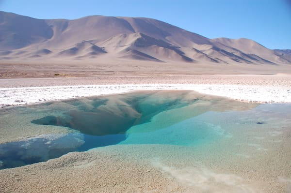
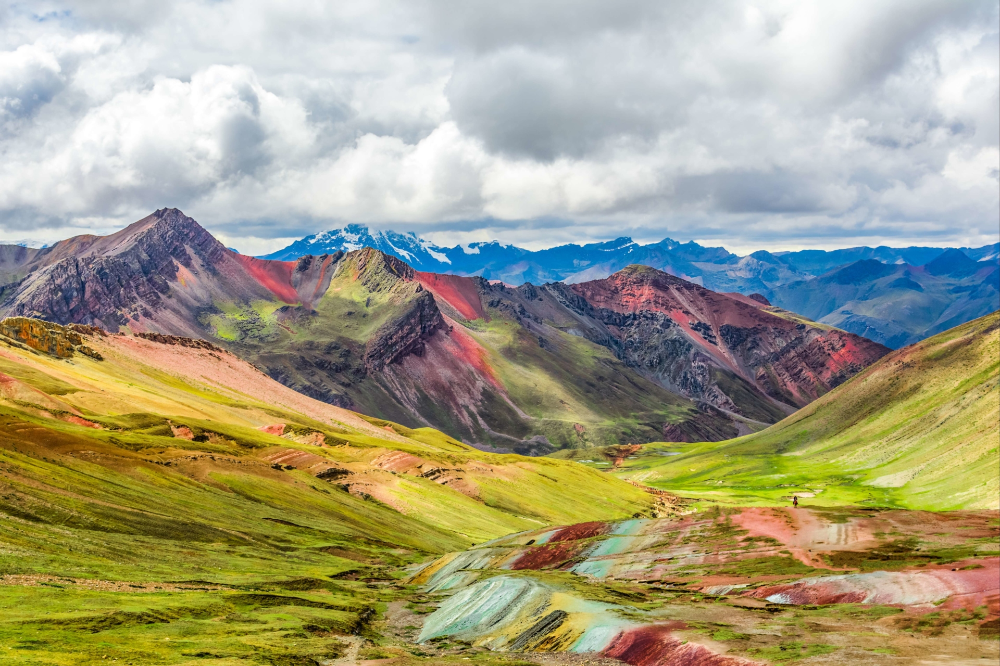
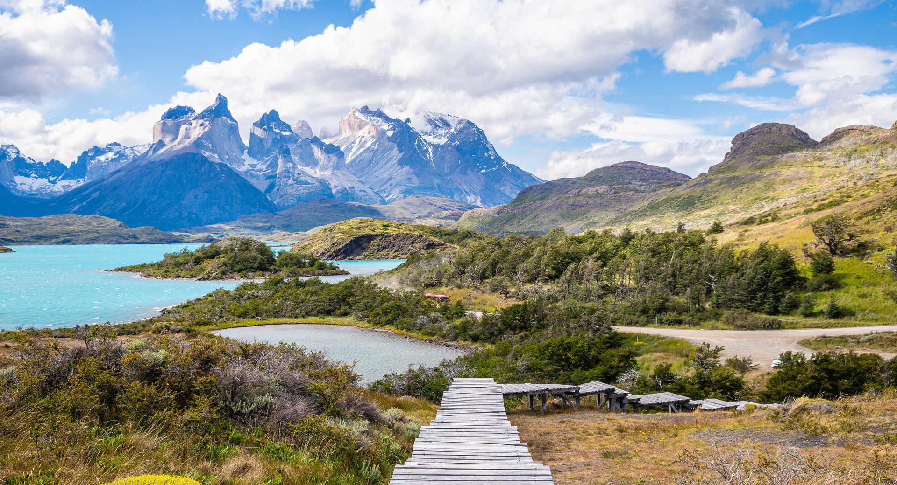

L'Amérique latine et l'Amérique du Sud sont synonymes de grands
espaces, de forêts luxuriantes, d'une faune diversifiée, de
patrimoines classés à l'Unesco, de sites pré-colombiens, de
cultures maya ou encore de plages paradisiaques. Un voyage en
Amérique du Sud peut satisfaire tous les voyageurs : pour des
vacances à la plage vous pourrez faire un séjour au Mexique en
tout inclus, ou découvrir les parcs naturels martitimes du Belize.
Moins connues les plages du Panama et des San Blas sont un
émerveillement pour les vacanciers en quête de nature et de
plongée. Pour des vacances découverte, vous aurez l'embarras du
choix pour faire un circuit en Amérique du Sud ou un autotour et
les sites incontournables sont nombreux. La forêt d'Amazonie, les
chutes d'Iguaçu en Argentine, les hauts plateaux du Pérou et le
mythique Machu Picchu, le désert d'Atacama au Chili...
Argentine

Grande comme cinq fois la France, l'Argentine est un pays
qui abrite des paysages fantastiques. Quand on suit du doigt sur
une mappemonde les contours de l'Argentine, nous voilà
emporté jusqu'à ce point ultime où le continent
sud-américain s'émiette en îlots, jusqu'au mythique cap
Horn. On imagine déjà l'aventure que représente un tel
voyage au bout du monde ! Beauté minérale des Andes, vertigineux
fracas des chutes d'Iguazú, silence assourdissant des canaux
de Patagonie et des centaines de kilomètres carrés de pampa...
La nature s'exprime ici dans tout ce qu'elle a de plus
sauvage. Le territoire n'en était pas pour autant vierge de
populations autochtones. Et si les Tehuelches et les peuples
fuégiens se sont évanouis devant la Conquête brutale du XIXe s,
la marque des Guaranis, des Quechuas et des Mapuches (entre
autres) reste bien vivace aux recoins du pays.
Pérou

Bien évidemment, au Pérou, il y a l'imposant Machu Picchu à
2430 mètres d'altitude et la ville de Cusco, l'ancienne
capitale de l'Empire inca, mais aussi le fameux lac Titicaca
et les lignes de Nazca que l'on rêve de survoler. Durant
votre voyage, vous partirez aussi à la découverte de vestiges de
bien d'autres civilisations qui peuplèrent la région avant
l'empire du Soleil : Nazca, Chavín, Chimú… Entre la côte
sableuse et désertique, baignée par le froid courant de
Humboldt, les sommets de la cordillera Blanca (intégrée à la
cordillère des Andes) regorgeant de possibilités de randonnées,
l'Altiplano peuplé de lamas et de vigognes et l'« enfer
vert » de la forêt amazonienne, il serait bien étonnant que vous
ne trouviez pas de quoi satisfaire votre soif d'exotisme
dans ce pays. En route pour un voyage inoubliable au Pérou !
Chili

Magnifique et lointain, le Chili possède la géographie la plus
extravagante au monde. Imaginez une bande de terre, étroite et
longue de 4 300 km qui se termine en un semis d'îlots qui
lie 2 océans… Étrange et fascinant pays adossé à la cordillère
des Andes, son rempart de feu et de neige, voilà un superbe
balcon naturel qui domine l'océan Pacifique. Du désert
d'Atacama jusqu'à la barrière des Andes en passant par
les vignobles de la plaine centrale au climat méditerranéen, que
de kilomètres vous attendent. De Santiago à Puerto Montt, de
l'île de Chiloë à Punta Arenas, le grand Sud austral se
faufile vers l'extrémité du continent avec des airs
d'Alaska latino-américain.